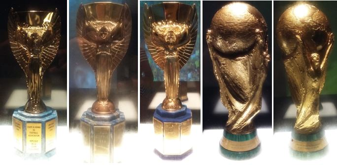

A Unica Seleção Campeã Mundial
A Seleção Brasileira de futebol surgiu em 1914. Desde que surgiu, se tornou uma das maiores seleções do futebol, sendo a única a ter cinco campeonatos mundiais e tambem ter participado de todas as Copas organizadas até hoje. A Era de Ouro da Seleção Brasileira foi nos anos em que conseguiu três Copa do Mundo(1958, 1962 e 1970).Depois desses anos passou por várias fases e conquistando um título mundial novamente somente em 1994 e o ultimo em 2002.
Taças dos cinco Mundiais
Maiores Jogadores pela a Seleção

A seleção ao longo dos anos teve vários jogadores que fizeram história, muitos goleadores, zagueiros impressionantes, dribladores geniais e capitões exemplares, jogadores como Vavá, Zagallo, Didi, Djalma Santos, Garrincha, Nílton Santos, Jairzinho, Falcão, Sócrates, Tostão, Zico, Rivelino, Taffarel, Bebeto, Romário, Rivaldo, Cafú, Marcos, Denilson, Ronaldo, Ronaldinho Gaúcho, Kaká e Neymar.
O maior da história do futebol
Além disso, é claro, é impossível não citar aquele que ainda hoje é tido como um dos maiores jogadores de futebol de todos os tempos: Pelé. O craque, inclusive, é o único da história a ganhar 3 Copas do Mundo (1958, 1962 e 1970). Edson Arantes do Nascimento, mais conhecido como Pelé, foi um futebolista brasileiro que atuou como atacante. Descrito como o "Rei do Futebol", é amplamente considerado como o maior atleta de todos os tempos.

- Maior artilheiro na história da seleção brasileira.
- Jogador com mais títulos de Copa do Mundo.
- Jogador mais jovem a ser campeão mundial.
- Mais assistências em Copas do Mundo.
| Competições | País Sede | Ano | |
|---|---|---|---|
| Mundiais | Copa do Mundo | Suécia | 1958 |
| Copa do Mundo | Chile | 1962 | |
| Copa do Mundo | México | 1970 | |
| Copa do Mundo | Estados Unidos | 1994 | |
| Copa do Mundo | Japão e Coreia do Sul | 2002 | |
| Intercontinentais | Copa das Confederações | Arábia Saudita | 1997 |
| Copa das Confederações | Alemanha | 2005 | |
| Copa das Confederações | África do Sul | 2009 | |
| Copa das Confederações | Brasil | 2013 | |
| Campeonato Pan-Americano | Chile | 1952 | |
| Campeonato Pan-Americano | México | 1056 | |
| Continentais | Copa América | Brasil | 1919 |
| Copa América | Brasil | 1922 | |
| Copa América | Brasil | 1949 | |
| Copa América | Brasil | 1989 | |
| Copa América | Bolívia | 1997 | |
| Copa América | Paraguai | 1999 | |
| Copa América | Perú | 2004 | |
| Copa América | Venezuela | 2007 | |
| Copa América | Brasil | 2019 |